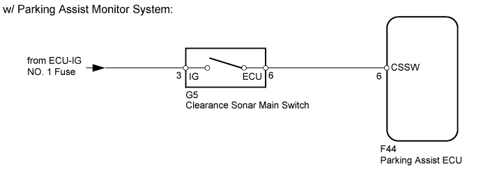
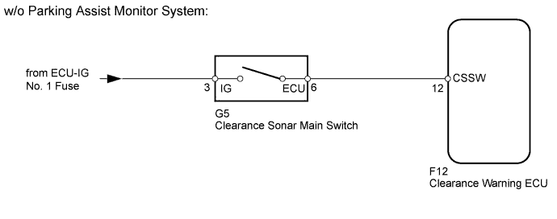
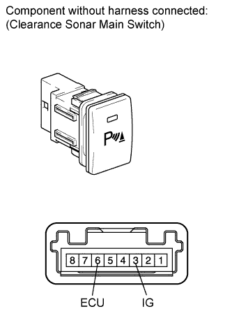
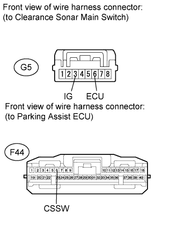
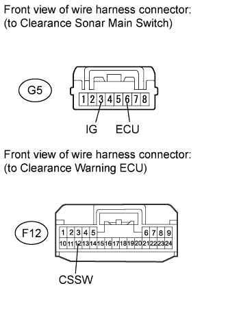

TOYOTA PARKING ASSIST-SENSOR SYSTEM > Clearance Sonar Main Switch Circuit |


| 1.READ VALUE USING INTELLIGENT TESTER (CLEARANCE SONAR MAIN SWITCH) |
Check the Data List for proper functioning of the clearance sonar main switch.
| Tester Display | Measurement Item/Range | Normal Condition | Diagnostic Note |
| Main Switch | Clearance sonar main switch/ON or OFF | OFF: Clearance sonar main switch off ON: Clearance sonar main switch on | - |
|
| ||||
| OK | ||
| ||
| 2.INSPECT CLEARANCE SONAR MAIN SWITCH |
 |
Remove the clearance sonar main switch (Click here).
Measure the resistance according to the value(s) in the table below.
| Tester Connection | Switch Condition | Specified Condition |
| 3 (IG) - 6 (ECU) | Clearance sonar main switch on | Below 1 Ω |
| 3 (IG) - 6 (ECU) | Clearance sonar main switch off | 10 kΩ or higher |
| Result | Proceed to |
| OK (w/ Park Assist Monitor System) | A |
| OK (w/o Park Assist Monitor System) | B |
| NG | C |
|
| ||||
|
| ||||
| A | |
| 3.CHECK HARNESS AND CONNECTOR (MAIN SWITCH - ECU AND BATTERY) |
 |
Disconnect the G5 switch connector.
Disconnect the F44 ECU connector.
Measure the voltage according to the value(s) in the table below.
| Tester Connection | Condition | Specified Condition |
| G5-3 (IG) - Body ground | Engine switch on (IG) | 11 to 14 V |
| G5-3 (IG) - Body ground | Engine switch off | Below 1 V |
Measure the resistance according to the value(s) in the table below.
| Tester Connection | Condition | Specified Condition |
| G5-6 (ECU) - F44-6 (CSSW) | Always | Below 1 Ω |
| G5-6 (ECU) - Body ground | Always | 10 kΩ or higher |
|
| ||||
| OK | ||
| ||
| 4.CHECK HARNESS AND CONNECTOR (MAIN SWITCH - ECU AND BATTERY) |
 |
Disconnect the G5 switch connector.
Disconnect the F12 ECU connector.
Measure the voltage according to the value(s) in the table below.
| Tester Connection | Condition | Specified Condition |
| G5-3 (IG) - Body ground | Engine switch on (IG) | 11 to 14 V |
| G5-3 (IG) - Body ground | Engine switch off | Below 1 V |
Measure the resistance according to the value(s) in the table below.
| Tester Connection | Condition | Specified Condition |
| G5-6 (ECU) - F12-12 (CSSW) | Always | Below 1 Ω |
| G5-6 (ECU) - Body ground | Always | 10 kΩ or higher |
|
| ||||
| OK | ||
| ||